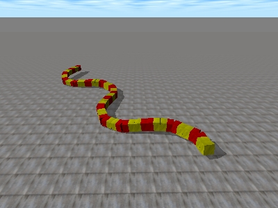

Estoy haciendo vídeos con algunas de las simulaciones de los robots ápodos de mi tesis. En esta se pueden ver 8 modos de caminar de un robot de 32 módulos del grupo cabeceo-viraje: Desplazamiento en línea recta, giros, rotación en S y U, desplazamiento lateral normal, inclinado, remero y movimiento de rodar.

En esta simulación se muestra la locomoción en línea recta de un robot de 32 módulos del grupo cabeceo-cabeceo:

Para estas simulaciones se está usando el ODE (Open Dynamic Engine). Es un motor de simulaciones físicas, libre y multiplataforma. Las fuentes del simulador las publicaré cuando termine de hacer limpieza del código.
Que chulo!!!
Mucha simulación muy bonita, pero yo quiero ver ese MegaCube de 32 modulos funcionando de verdad… tiene que ser impresionante!
Es cuestión de tiempo y dinero. El conocimiento sobre cómo hacerlo está ahí 🙂
Sería muy divertido hacerlo como proyecto final de un taller de robótica modular. Los grupos hacen sus mini-robots modulares, y al final, se usan los módulos de todos los participantes para hacer un mega-gusano